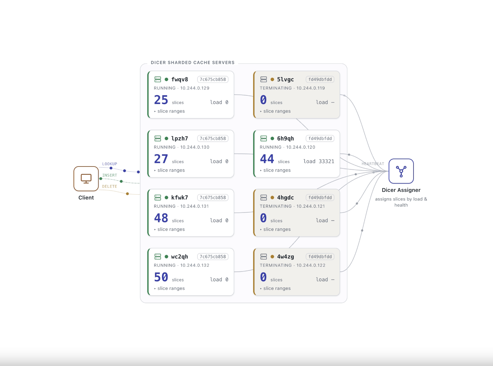

Why Dicer
A control plane that watches load and health, then continuously reassigns keys to pods so your service stays balanced and available.
Zero downtime
Dicer provides zero downtime for rolling updates, autoscaling, and node upgrades by listening to shutdown signals and reassigning slices.
Crash detection
Dicer reassigns slices from unresponsive pods, so traffic reroutes to healthy ones.
Load balancing
Dicer reassigns, splits, and merges slices to keep every pod inside a tolerable load band.
Hot-key isolation
Dicer isolates an overloaded key into its own slice, on a dedicated pod if needed.
Asymmetric replication
Dicer replicates the hottest slices across several pods at once to spread the load.
Low churn
Dicer meets its load-balancing goals while moving as few keys as possible.
Use cases
Any workload that requires assigning keys to pods.
In-memory caching
Serve database state from local memory with low latency.
Quota & rate limiting
Track counters per key without a shared store.
Session sharding
Pin user or LLM sessions — including KV cache reuse — to a pod.
Pub/sub rendezvous
Match publishers and subscribers on the same pod.
Batching & ingestion
Group high-throughput writes before they hit storage.
Leader election
Run a highly available controller with soft leader selection.
Getting started
1
Build it
Clone the repo and build with Bazel.
git clone https://github.com/databricks/dicer.git
cd dicer && bazel build //...2
Run the demo
Deploy a sample key-value cache service and client locally.
Demo walkthrough →3
Go to production
Deploy the Assigner service with the provided Helm charts.
Deployment guide →
Docs & community
README
Architecture, concepts, and the full API surface.
User guide & FAQ
Multi-target setup, config options, and common questions.
Blog post
Why we built Dicer, and why we open-sourced it.
Contributing
Start with an issue; a CLA is required.
Discussion group
Questions and feedback at dicer-discuss.
License
Apache License 2.0.